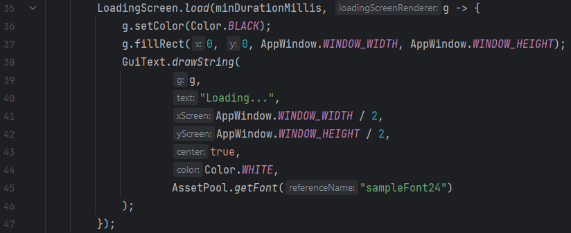

Loading Screens are managed through the static Loading Screen class. Arkito will automatically manage and render your loading screen for you, thus leaving you with the sole task of customizing it. When creating a loading screen, you will be asked to specify two parameters: the minimum duration of your loading screen in milliseconds and the instructions to render your loading screen. This is done by injecting an interface through the parameters.
Example:
